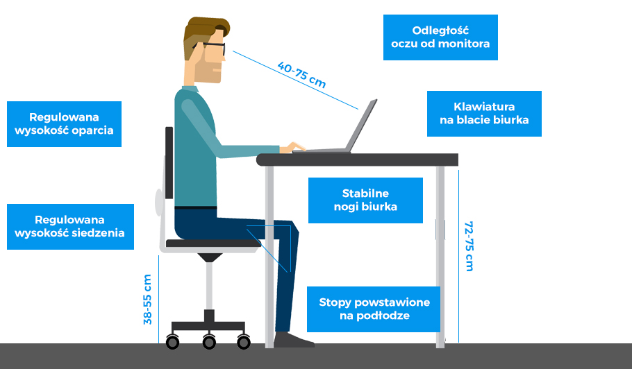

INSTRUKCJA BHP PRZY OBSŁUDZE KOMPUTERA I DRUKARKI
Przed przystąpieniem do pracy pracownik powinien:
- 1.Przewietrzyć pomieszczenie, w którym znajduje się stanowisko pracy
- 2.Skontrolować wyposażenie stanowiska pracy
- 3.Dostosować biurko, krzesło i podnóżek do wymiarów swojego ciała
- 4.Przygotować komputer do pracy
- 5.Przygotować potrzebne dokumenty oraz programy użytkowe do pracy
Po zakończeniu pracy pracownik powinien:
- 1.Wyłączyć komputer, monitor, drukarkę i pozostałe urządzenia oraz sprzęt stanowiskowy zasilany energią elektryczną
- 2.Uporządkować i sprzątnąć stanowisko pracy
- 3.Schować dyskietki, pozamykać szafy i biurko
- 4.Sprawdzić, czy pozostawiony sprzęt komputerowy nie stwarza jakichkolwiek zagrożeń i czy jest on prawidłowo
- 5.zabezpieczony przed uruchomieniem przez osoby postronne.
Zabrania się:
- 1. Spożywania posiłków podczas pracy na stanowisku komputerowym,
- 2. Palenia tytoniu w pomieszczeniach pracy z komputerem,
- 3. Samowolnego naprawiania urządzeń komputerowych, sprzętu oraz wyposażenia zasilanego energią elektryczną,
- 4. Używania do czyszczenia komputera i drukarki rozpuszczalników lub innych płynów łatwopalnych,
- 5. Zezwalania na obsługę komputera osobom nieupoważnionym.
W trakcie wykonywania pracy pracownik powinien:
- 1. Komputer i drukarkę obsługiwać tylko zgodnie z instrukcją obsługi zawartą w dokumentacji producenta, nie stwarzając zagrożeń przez ich niewłaściwe użytkowanie
- 2. Zapewnić przed klawiaturą wystarczającą przestrzeń do podparcia rąk i dłoni
- 3. Stosować odległość ekranu monitora od oczu wynoszącą od 400 do 750 mm
- 4. Nie dopuścić do komputera osób nieupoważnionych.
Postępowanie w przypadku awarii:
- 1. W przypadku pożaru ściśle stosować się do instrukcji ochrony przeciwpożarowej, z którą powinien zapoznać się każdy pracownik
- 2. W innych przypadkach natychmiast zawiadomić przełożonego i (w razie potrzeby) właściwe służby ratownicze.
Wymogi ogólne działania z drukarką:
- 1. Drukarka powinna być zainstalowana przez wykwalifikowanych pracowników serwisu obsługi.
- 2. Drukarka powinna być ustawiona w miejscu zapewniającym swobodny dostęp.
- 3. Przed rozpoczęciem użytkowania drukarki pracownik powinien zapoznać się z instrukcją obsługi danegomodelu urządzenia.
- 4. Drukarka powinna być ustawio
